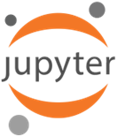
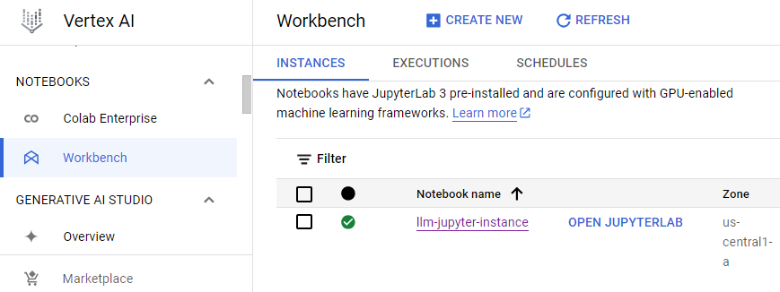
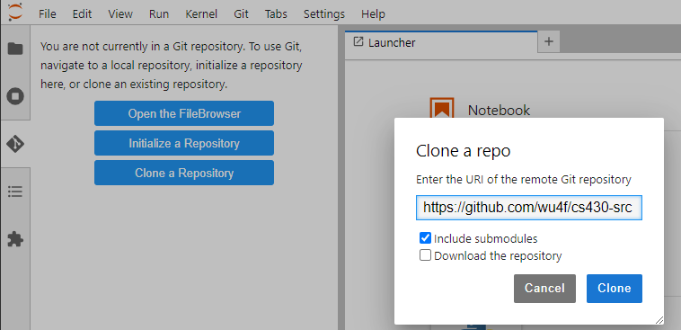
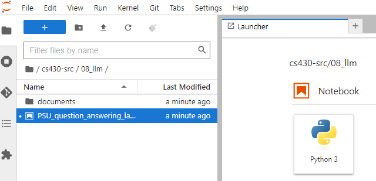
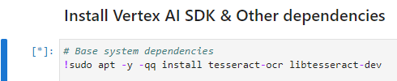
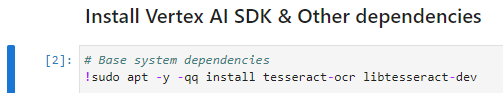

Vertex AI and its Generative AI Workbench provide a means for customizing large language models (LLMs) to build personalized applications. In this lab, you will run a Jupyter notebook on Vertex AI to experiment with different ways of implementing a custom document Q&A (question and answer) application.
From Cloud Shell, deploy a user notebook on Vertex AI.
gcloud notebooks instances create llm-jupyter-instance \
--vm-image-project=deeplearning-platform-release \
--vm-image-family=common-cpu-notebooks \
--machine-type=e2-standard-4 \
--location=us-central1-aAlternatively, you can navigate to Vertex AI and deploy a notebook using the default settings by visiting the link https://console.cloud.google.com/vertex-ai/workbench/deploy-notebook. Ensure that the notebook is in us-central1.
After the notebook has been created, visit the Vertex AI Workbench and find the area where user-managed notebook instances reside and open the notebook by clicking "OPEN JUPYTERLAB".

We'll be running sample code adapted from Google Cloud Platform's generative AI repository. The code shows the workflow that leverages language models via an API to support retrieval-augmented generation of responses.
Within the Jupyter notebook, select the git icon and clone the course repository https://github.com/wu4f/cs430-src.

After cloning the repository, use the file explorer to navigate to the Python notebook located at cs430-src/08_llm/PSU_question_answering_large_documents.ipynb

You will be stepping through the steps of the notebook by executing its individual cells. Read each section of text in the notebook, then when a notebook cell needs to be executed, type "Control+Enter" and wait for the cell to complete execution before proceeding. Code cells are denoted by [*] when executing as shown below.

Once finished, cells are then numbered by their execution order within the notebook (e.g. [1]) as shown below.

Follow the instructions in the notebook including answering its questions and taking screenshots for your lab notebook. After reaching the end of the notebook, return to the codelab to answer final questions.
The notebook code covers multiple ways of implementing a system that supports user's querying a set of custom documents. Answer the following questions.
In Cloud Shell, delete the notebook.
gcloud notebooks instances delete llm-jupyter-instance \
--location us-central1-a